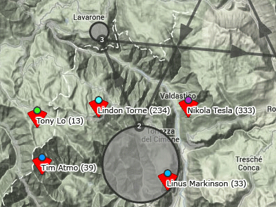
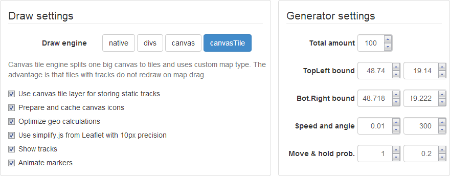
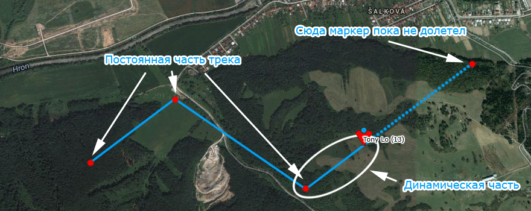
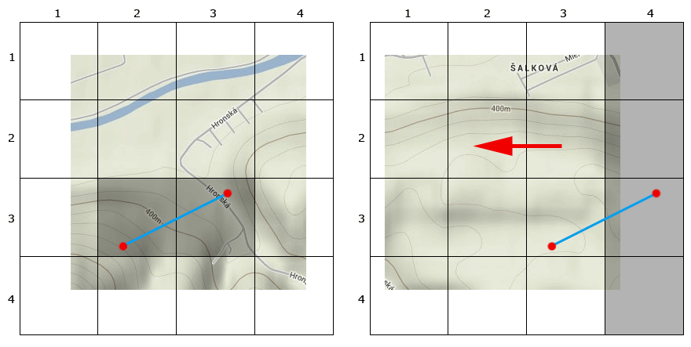

Я работаю над визуализацией парапланерных соревнований - пишу плеер просмотра гонки для Airtribune.com. В процессе работы мне попадаются интересные и нестандартные задачи. Одна из них - задача быстрой отрисовки маркеров и треков на карте google maps.
Масштабы примерно следующие: есть ~200 трекеров в довольно ограниченной области (50x50км), каждый передает данные о своем положении раз в 10 секунд. Нужно их все отрисовать на карте и плавно перемещать при изменении координат. За каждым маркером должен отрисовываться трек. Картинка примерно следующая:
Довольно скоро обнаружилось, что встроенные объекты - google.maps.Marker и google.maps.Polyline - для данной задачи работают слишком медленно. Была куча идей по оптимизации, и в результате получилось решение на canvas-е, которое работает со скоростью 40fps даже на тысяче маркеров. Впрочем, fps вы можете померить сами - я собрал тестовое приложение для сравнения 4-х движков, в котором на лету можно подключать разные фишки и смотреть на скорость работы.
http://kasheftin.github.io/gmaps/ - здесь демо, https://github.com/Kasheftin/gmaps - здесь исходный код. Работает в firefox и chrome, html+js. Используются google maps api v3, knockout, require, underscore и bootstrap.
Настройки разбиты на две части - в правой части генератор координат. Кроме управления количеством маркеров здесь мало интересного. Генератор эмулирует настоящий сервер, то есть выплевывает данные кусками на минуту вперед. Поэтому если настройки меняются, изменения видны не сразу. Скорость - это максимальная величина, на которую может измениться широта или долгота за секунду. Угол - максимальный угол, на который может поменяться курс. Вероятность движения - это вероятность того, что на данную секунду придут данные с координатами пилота, а hold - вероятность того, что данные придут те же самые (т.е. пилот зависнет на одном месте). Между контрольными точками движение считается равномерным прямолинейным.
Самое интересное - в левой колонке настроек. Здесь можно переключать движки, при выборе движка под ним отображаются чекбоксы с его настройками, причем все подключается налету на том же наборе данных - это сделано чтобы адекватно оценивать fps. Сам fps будет отображаться если нажать на кнопку play над картой. Fps меряется тупо и практически - для проигрывания анимации используется метод getAnimFrame - сколько раз он успевает отработать за секунду, такой и fps.
Это отрисовка стандартными средствами google maps. Первое, что приходит в голову - использовать google.maps.Marker для отображения текущего положения трекеров и google.maps.Polyline для отрисовки треков. Причина тормозов при анимации - объектная логика. Маркеры и линии - это картинки на канвасе, однако мы общаемся с ними как с объектами. И это затратно. Перемещения маркеров должны быть плавными. Если на данный момент времени маркер не имеет координат, его мгновенные координаты высчитываются как линейная пропорция между имеющимися координатами до и после. Это означает, что в каждом кадре ВСЕ маркеры двигаются.
Предположим, что в массиве markers были созданы 100 маркеров со случайными координатами. Рассмотрим код:
var run = function() {
for (var i = 0; i < markers.length; i++)
markers[i].setPosition(getRandomCoords());
requestAnimFrame(run);
}
run();
Функция run - это грубо говоря кадр анимации. В каждом кадре каждый маркер по-очереди передвигается на новое положение очень удобным методом setPosition. В нем происходит примерно следующее:
Предположим, есть код, который в цикле совершает некоторое продолжительное действие, причем неизвестно, сколько времени оно занимает (классический пример - функция requestAnimFrame). Хочется узнать это время, прибавить его к таймеру и получить какое-то время, которое показывать в плеере. При этом естественно ожидать, что расчитанное время будет идти с той же скоростью, что и настоящее. Очевидное решение:
var run = function() {
// Запоминаем текущее время
var startDt = (new Date).getTime();
// Делаем какое-то продолжительное действие, а потом вызываем callback
requestAnimFrame(function() {
// Посмотрим, сколько сейчас времени
var currentDt = (new Date).getTime();
// Посчитаем, сколько времени заняло действие requestAnimFrame
var diffDt = currentDt-startDt;
// Прибавим это время к нашему таймеру
ourTimer += diffDt;
});
// Зациклим код
run();
}
Вроде все верно? Предлагаю запустить утрированный пример и найти в чем ошибка - http://jsfiddle.net/kasheftin/a5sen/1/.
Треками займемся позже, а пока оптимизируем отрисовку маркеров. В google maps v2 и леафлете маркеры рисуются дивами. Логично предположить, что передвинуть 100 дивов быстрее, чем 100 раз перерисовать канвасы с объектами. Особенно если при этом оптимизировать расчеты координат.
Есть два механизма наложения своих объектов на google maps - с помощью оверлеев (overlays) или с помощью своего типа карты (overlay map type). Для дивных маркеров будем использовать оверлей. Создадим див-контейнер, который наложим поверх карты, и в который будем добавлять дивы с иконками маркеров. В каждом кадре анимации будем пробегать по массиву маркеров, расчитывать новые координаты и сдвигать дивы, если требуется.
var Overlay = function(map) {
this._map = map;
this.setMap(map);
}
// оверлей должен наследоваться от google.maps.OverlayView
Overlay.prototype = new google.maps.OverlayView();
// Этот метод вызывается в момент наложения слоя на карту
Overlay.prototype.onAdd = function() {
// Создаем контейнер для маркеров-дивов
this._container = document.createElement("div");
this._container.style.position = "absolute";
// Предусмотрено несколько мест, в которые можно добавить оверлей, они отличаются z-index-ом
// floatPane - самый нижний уровень, под ним только тайлы карты
this.getPanes().floatPane.appendChild(this._container);
this.relayout();
}
// Этот метод вызывается при сдвигах карты и изменении зума - контейнер наложен на карту и двигается вместе с ней
// После каждого сдвига нужно вернуть его обратно, чтобы его левый-верхний угол совпадал с левым-верхним углом видимой области
Overlay.prototype.relayout = function() {
var bounds = this._map.getBounds();
// гео-координаты левого-верхнего угла карты
var corner = new google.maps.LatLng(bounds.getNorthEast().lat(),bounds.getSouthWest().lng());
// прямоугольные координаты угла
this.sqCorner = this._map.getProjection().fromLatLngToPoint(corner);
// пиксельные координаты при данном зуме
this.pxCorner = this.getProjection().fromLatLngToDivPixel(corner);
// передвигаем див на пиксельные координаты
this._container.style.top = Math.floor(this.pxCorner.l)+"px";
this._container.style.left= Math.floor(this.pxCorner.t)+"px";
}
// Метод для добавления маркеров в контейнер
Overlay.prototype.appendChild = function(child) {
this._container.appendChild(child);
}
var map = new google.maps.map(...);
var overlay = new Overlay(map);
В google maps предусмотрено несколько мест, в которые можно добавлять свои элементы. Оверлеи рекомендуется добавлять в один из контейнеров MapPanes. Элементы управления (например, свою шкалу зума или переключатели)- в MapControls. Соответственно, все слои MapPanes "приклеены" к тайлам карты и двигаются при драге. Элементы управления находятся поверх тайлов и неподвижны.
Возникает идея - раз при каждом драге карты оверлей нужно возвращать обратно в левый-верхний угол, почему бы его не поместить в неподвижный слой контролов? Это работает (дискуссия на stackoverflow и рабочий пример на jsfiddle). Идея даже может показаться удачной - до тех пор, пока приложение не запущено на медленной системе типа андроида. Там оказывается, что карта двигается, а маркеры не успевают и тупят на месте. Все привыкли к тому, что при драге могут вылезать незагруженные серые области, которые потом заполняются данными (например, сдвинули карту - а трек на новой области отрисовался только через секунду). А вот рассинхрон в движение слоев недопустим.
Раз маркеры постоянно в движении, логично предположить, что перерисовать их все разом быстрее, чем двигать по одному. Не нужны observable или events emitter, не нужно следить, когда маркер меняет свои координаты (между кадрами это может произойти не один раз). Вместо этого в каждом кадре пробежим по всем маркерами и отрисуем их заново на одном большом канвасе, который наложен поверх карты.
var Overlay = function(map) {
this._map = map;
this._mapDiv = this._map.getDiv();
this.setMap(map);
}
// оверлей должен наследоваться от google.maps.OverlayView
Overlay.prototype = new google.maps.OverlayView();
// Этот метод вызывается в момент наложения слоя на карту
Overlay.prototype.onAdd = function() {
// Создаем canvas-слой поверх карты
this._container = document.createElement("canvas");
this._canvas.style.position = "absolute";
this._container.style.pointerEvents = "none";
this._container.style.webkitTransform = "translate3d(0,0,0)";
this._container.style.imageRendering = "optimizeSpeed";
// Предусмотрено несколько мест, в которые можно добавить оверлей, они отличаются z-index-ом
// floatPane - самый нижний уровень, под ним только тайлы карты
this.getPanes().floatPane.appendChild(this._canvas);
this.relayout();
}
// Этот метод вызывается при сдвигах карты и изменении зума - контейнер наложен на карту и двигается вместе с ней
// После каждого сдвига нужно вернуть его обратно, чтобы его левый-верхний угол совпадал с левым-верхним углом видимой области
Overlay.prototype.relayout = function() {
var bounds = this._map.getBounds();
// гео-координаты левого-верхнего угла карты
var corner = new google.maps.LatLng(bounds.getNorthEast().lat(),bounds.getSouthWest().lng());
// прямоугольные координаты угла
this.sqCorner = this._map.getProjection().fromLatLngToPoint(corner);
// пиксельные координаты при данном зуме
this.pxCorner = this.getProjection().fromLatLngToDivPixel(corner);
// передвигаем див на пиксельные координаты
this._container.style.top = Math.floor(this.pxCorner.l)+"px";
this._container.style.left= Math.floor(this.pxCorner.t)+"px";
// Канвас должен быть размером с карту, проверяем размеры карты и ресайзим, если нужно
if (this._width != this._mapDiv.offsetWidth || this._height != this._mapDiv.offsetHeight) {
this._width = this._mapDiv.offsetWidth;
this._height = this._mapDiv.offsetHeight;
this._container.width = w;
this._container.height = h;
}
}
Автор этого оверлея - napa3um. Он же предложил следующую оптимизацию. Каждый раз при изменении координат точки происходит вычисление ее прямоугольных координат по формуле проекции Меркатора WGS84. Чтобы избежать вычислений, можно расчитывать и хранить прямоугольные координаты на сервере, а на клиент отправлять уже результаты вычислений.
В тестовом приложении нет сервера, и поэтому не протестировать результат этой оптимизации. Чтобы сэмулировать эффект, я заменил вычисление проекции на линейное преобразование (известны географические и прямоугольные координаты углов карты, и на их основе расчитываются прямоугольные координаты любой точки как линейная пропорция). В настройках приложения есть чекбокс "optimize geo calculations", который включает этот метод расчета. На больших зумах пропорция врет, но на тех зумах, на которых это заметно, парапланерные гонки не смотрят. Впрочем, результаты показывают, что любые вычисления сейчас происходят очень быстро, а тормоза возникают на этапе отрисовки.
При использовании канваса часто приходится решать задачу об обработке событий мыши на нарисованных объектах. На airtribune.com для обработки кликов по парапланам используются оба движка - сами маркеры рисуются на канвасе, поверх канваса живет дивовый оверлей с пустыми дивами, которые двигаются синхронно маркерам и ловят клики.
Это просто иллюстрация того, что спрайты, иконки, тексты и другую мелкую графику надо кешировать. В канвасном движке маркеры рисуются вместе с подписями. Рисование текста на канвасе, особенно с обводкой (strokeText) - очень дорогая операция. Есть настройка, которая включает кеширование иконки с текстом на отдельном небольшом канвасе (подготовленное изображение затем вставляется в оверлей командой drawImage). При прочих равных условиях на 100 маркерах производительность кешированной и не кешированной версий отличается в 30 раз.
Сервер отдает данные о положении маркера в виде массива контрольных точек [[time,lat,lng],..]. Трек, который нужно отрисовывать вслед за маркером, разбивается на постоянную и динамическую части. Постоянная часть трека - это ломаная, соединяющая контрольные точки с временем меньшим, чем текущее. Динамическая - это отрезок от последней отрисованной контрольной точки до текущего положения маркера (из-за плавности перемещения маркер почти всегда находится между какими-то контрольными точками).
В нативном и дивном движках треки рисуются с помощью объекта google.maps.Polyline. Есть настройка - использовать одну polyline для всего трека или две (одну для динамической части, другую - для статической). Чем длиннее трек, тем больше единая polyline проигрывает разбитой на две. Это связано с тем, что в первом случае в каждом кадре нужно удалять последнюю точку из трека (ту, которая указывает на текущее положение маркера) и добавлять ее заново.
Работа с канвасами напоминает рисование ручкой на бумаге. Дорисовать линию можно довольно быстро, но чтобы ее потом подвинуть - проще взять новый лист и перерисовать все заново. Рисование треков удачно вписывается в эту технологию. Сама суть трека в том, что это - след за маркером. Идея в том, что при добавлении нового звена не нужно перерисовывать весь трек заново!
Используем два канваса, один - для статичной части треков, другой - для динамической. Динамическую по-прежнему перерисовываем раз в кадр. Статическую - только при сдвигах карты и изменении зума. Когда нужно продлить трек - просто дорисуем новое звено к тому, что уже нарисовано на канвасе. Скорость работы таких треков высокая и не зависит от длины трека. По сути, если бы не сдвиги карты (и еще несколько случаев, когда нужна перерисовка), координаты точек трека можно бы было вообще не запоминать на клиенте.
Simplify.js создан как будто специально для данной задачи, глупо его не использовать. На дефолтных настройках генератора эффект не виден, однако реальные треки меньше напоминают броуновское движение. В данной задаче скорость важнее точности, поэтому используем быстрый радиальный алгоритм.
Все описанные оптимизации сейчас работают на aitribune.com. Примеры гонок - 1, 2. С точки зрения производительности, главное, что сейчас не устраивает - это тормоза в отрисовке при сдвигах карты, когда каждый, даже небольшой, сдвиг вызывает полную перерисовку всех треков. Чтобы решить эту проблему, вместо оверлея будем использовать свой тип карты (custom map type) с тайлами. Тайл - это квадрат со стороной 256 пикселей. При сдвигах карты движок google maps сам достраивает новые квадраты и удаляет старые. Все, что от нас требуется - написать метод, который должен вызываться при достройке нового квадрата:
var CanvasTileMapType = function() { }
// Устанавливаем размер тайла
CanvasTileMapType.prototype.tileSize = new google.maps.Size(256,256);
// Метод, который вызывается при добавлении нового тайла
// Здесь coord = {x:..,y:..} - это номера квадратов по x и y от левого верхнего угла глобальной карты
// Это значит, что левый верхний угол нового тайла имеет пиксельные координаты {x: coord.x*256, y: coord.y*256}
// Соответственно, прямоугольные координаты угла тайла равны {x: coord.x*256/(1<<zoom), y: coord.y*256/(1<<zoom)}.
CanvasTileMapType.prototype.getTile = function(coord,zoom,ownerDocument) {
var tile = {
coord: coord,
zoom: zoom,
size: this.tileSize.width,
};
tile.canvas = ownerDocument.createElement("canvas");
tile.canvas.width = tile.size;
tile.canvas.height = tile.size;
tile.canvas.tile = tile;
return tile.canvas;
}
var map = new google.maps.Map(...);
// Создаем новый канвас-тайл-оверлей и подключаем его к google maps
var canvasTileMapType = new CanvasTileMapType;
map.overlayMapTypes.push(canvasTileMapType);
Статичные куски треков будем рисовать на этом слое, при этом трек рассматриваем как набор отрезков. Возможны два варианта:
Вариант 1: пришли новые данные, нужно достроить трек. В этом случае пробегаем только по новым точкам трека. Для каждого нового отрезка очень быстро можно получить номер(а) квадрата, в котором он содержится. Получили номер квадрата, отрисовали.
Вариант 2: был сдвиг карты, в результате которого инициализировались новые тайлы. В этом случае нужно заново пробежать по всем отрезкам, но рисовать только те, которые попадают в новые тайлы. При добавлении нового тайла отрисовку нужно запускать не сразу, поскольку тайлы обычно добавляются по нескольку за раз рядами или колонками.
Хм. Статья неожиданно кончилась. Была рассмотрена довольно узкая задача по отрисовке треков на карте, однако некоторые приемы могут быть применены в широкой области. С помощью канвасного оверлея можно рисовать на карте любые объекты (см. пример). Собственный тайловый слой тоже можно использовать много где. К примеру, в некоторых задачах можно генерить тайлы с маркерами на сервере, и передавать на клиент готовые картинки (см. fusion tables). Ну а сама идея треков тоже общая для любой анимации: меньше перерисовывай - больше достраивай.